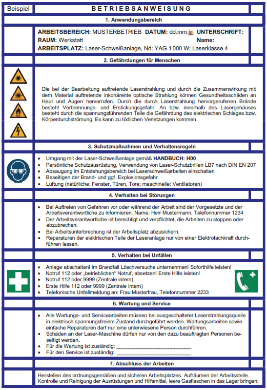

Anlage 5 Was ist bei der Erstellung einer Betriebsanweisung zu beachten?
1. Anwendungsbereich
Im Anwendungsbereich einer Betriebsanweisung wird festgelegt, vor welcher Einwir-kung ein Schutz erreicht werden soll, in diesem Beispiel „Schutz gegen Laserstrah-lung“. Folgende Angaben werden dokumentiert:
- Ort des Arbeitsbereiches/Arbeitsplatzes,
- Laserklasse,
- Betriebsart (kontinuierlich, gepulst),
- Wellenlänge,
- Leistung des Lasers …
2. Gefährdungen für den Menschen
Es wird beschrieben, welche Gesundheitsschäden durch die beschriebenen Einwir-kungen auftreten können. Dabei wird auch Bezug auf die Zielorgane (Auge und Haut) genommen:
- Augenschädigung,
- Hautschädigung,
- Blendungsgefahr,
- Lebensgefahr (Hochleistungslaser mit Strahlungsleistungen von mehreren kW),
- sonstige Gefährdungen durch indirekte Auswirkungen
(Brandgefahr, Explosionsgefahr, Gefährdungen durch inkohärente optische Strahlung, Gefährdungen durch ionisierende Strahlung, Gase, Dämpfe, Stäube, Nebel und Aerosole).
3. Schutzmaßnahmen und Verhaltensregeln
In diesem Abschnitt wird festgelegt, welche Handlungsweisen durchzuführen sind. Dabei kann auch auf eine Handlungsanleitung verwiesen werden, die als Anlage an die Betriebsanweisung formuliert wird. Des Weiteren wird auf einzuhaltende Schutz-maßnahmen sowie auf gegebenenfalls erforderliche regelmäßige Überwachung und Kontrollen eingegangen. Beispiele für Punkte, die für diesen Abschnitt relevant sind:
- die Einhaltung der Expositionsgrenzwerte,
- die arbeitstägliche Funktionsprüfung der zwangsläufigen Abschaltung der Strah-lung von Verkleidungs- und Verdeckungssystemen mit selbsttätiger Überwa-chung,
- die Wirkung der Abschirmungen,
- die Eindämmung von Reflexionen,
- die notwendigen Absaugungen, z. B. bei Gefahrstoffentstehung,
- die Aufstellung von Hinweisschildern vor Gefahren,
- die Verwendung der Laser-Schutzbrillen oder Laser-Justierbrillen sowie anderer persönlicher Schutzausrüstungen.
4. Verhalten bei Störungen
In diesem Abschnitt wird angegeben, wie sich die Beschäftigten bei Störungen zu verhalten haben. Es wird dabei eine einzuhaltende Reihenfolge festgelegt. Beispiel:
- Bei Auftreten von Gefahren vor oder während der Arbeit ist die Vorgesetzte Frau Musterfrau oder der Vorgesetzte Herr Mustermann und/oder die Arbeitsverant-wortliche Frau Musterfrau oder der Arbeitsverantwortliche Herr Mustermann zu informieren.
Name: …
Telefon: …
- Die oder der Arbeitsverantwortliche ist berechtigt und verpflichtet, die Arbeiten erforderlichenfalls zu unterbrechen oder abzubrechen.
- Bei Arbeitsunterbrechung ist der Arbeitsplatz abzusichern.
- Wartungs-, Service und Instandsetzungsarbeiten sind nur durch Firma Mustermann nach Auftrag durch die Arbeitsverantwortliche oder den Arbeitsverantwortli-chen in Auftrag zu geben.
5. Verhalten bei Unfällen
Es wird beschrieben, welche Maßnahmen bei Unfällen getroffen werden müssen. Dabei wird auf die sofortige Gefahrenminderung (z. B. Betätigung des Not-Aus- oder Not-Halt-Schalters), die Absicherung des Arbeitsbereiches sowie insbesondere auf die Meldekette eingegangen. Beispiel:
- Vor Rettung/Bergung von Verletzten Eigensicherung beachten, z. B. Anlage abschalten, Stromzufuhr ausschalten, Not-Aus-Schalter betätigen!
- Soforthilfe leisten!
- Notruf (112) oder „betrieblichen“ Notruf, der nach außen durch qualifiziertes Per-sonal weitergeleitet wird, absetzen!
- Erste Hilfe leisten!
- Telefonische Unfallmeldung an: …
6. Wartung und Service
Es wird festgelegt, welche Maßnahmen bei Wartung und Service notwendig sind.
7. Abschluss der Arbeiten
Hier wird festgelegt, wie der Arbeitsplatz nach Beendigung der Arbeiten gesichert und verlassen werden muss. Dies beinhaltet das Herstellen des ordnungsgemäßen und sicheren Arbeitsplatzes, Aufräumen der Arbeitsstelle, Kontrolle und Reinigung der Ausrüstungen und Hilfsmittel.
Beispiel für eine Betriebsanweisung für eine Laser-Schweißanlage
